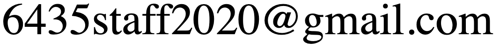

6.435 Bayesian Modeling and Inference
Note: in 2018 and earlier, this course ran using the (temporary) number 6.882; since 2019, it has been 6.435.
Spring 2020
Room 1-390
Tuesday, Thursday 2:30–4:00 PM
First class: Tuesday, February 4
Instructor:
Professor Tamara Broderick
Office Hours: Thursday, 4–5pm, 32-G498
Email: 
TAs:
Raj Agrawal, Lorenzo Masoero
Office Hours: Tuesday, 4–5pm, 32-G475 (the G4 common area, just outside 32-G451)
Email:
Introduction
As both the number and size of data sets grow, practitioners are interested in learning increasingly complex information and interactions from data. Probabilistic modeling in general, and Bayesian approaches in particular, provide a unifying framework for flexible modeling that includes prediction, estimation, and coherent uncertainty quantification. In this course, we will cover the modern challenges of Bayesian inference, including (but not limited to) speed of approximate inference, making use of distributed architectures, streaming data, and complex data interactions. We will study Bayesian nonparametric models, wherein model complexity grows with the size of the data; this allows us to learn, e.g., a greater diversity of topics as we read more documents from Wikipedia, identify more friend groups as we process more of Facebook's network structure, etc.
Piazza Site
Our course Piazza page is here: https://piazza.com/mit/spring2020/6435
Description
This course will cover Bayesian modeling and inference at an advanced graduate level. A tentative list of topics (which may change depending on our interests) is as follows:
- Introduction to Bayesian inference; motivations from de Finetti, decision theory, etc.
- Hierarchical modeling, including popular models such as latent Dirichlet allocation
- Approximate posterior inference
- Variational inference, mean-field, stochastic variational inference, challenges/limitations of VI, etc.
- Monte Carlo, avoiding random-walk behavior, Hamiltonian Monte Carlo/NUTS/Stan, etc.
- Evaluation, sensitivity, robustness
- Bayesian nonparametrics: why and how
- Mixture models, admixtures, Dirichlet process, Chinese restaurant process
- Feature allocations, beta process, Indian buffet process
- Combinatorial stochastic processes
- Learning functions, Gaussian processes
- Probabilistic numerics
- Bayesian optimization
Prerequisites
Requirements: A graduate-level familiarity with machine learning/statistics and probability is required. (E.g. at MIT, 6.437 or 6.438 or [6.867 and 6.436].)
We will assume familiarity with graphical models, exponential families, finite-dimensional Gaussian mixture models, expectation maximization, linear & logistic regression, hidden Markov models.